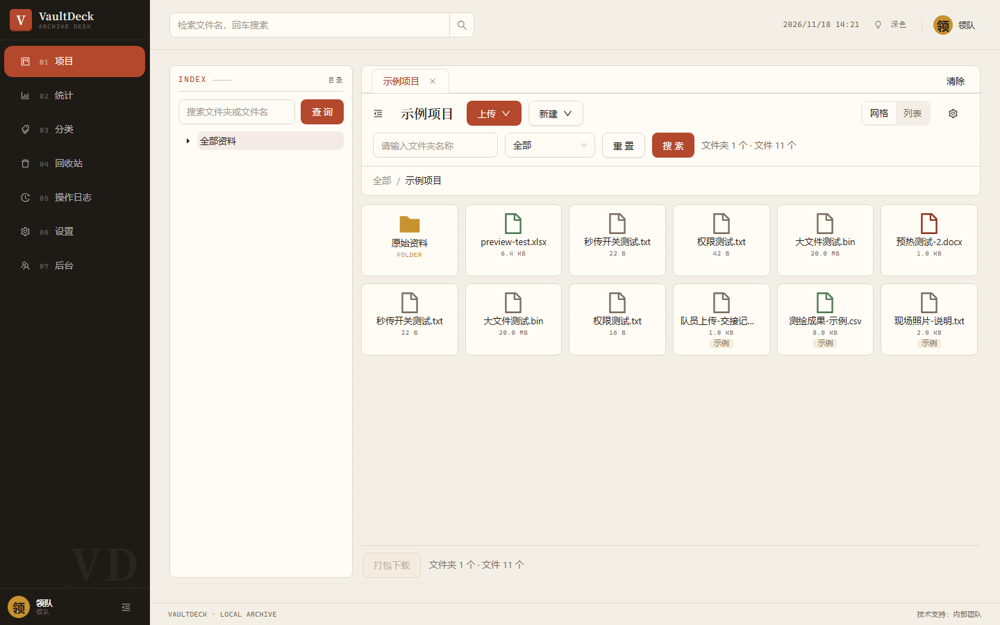
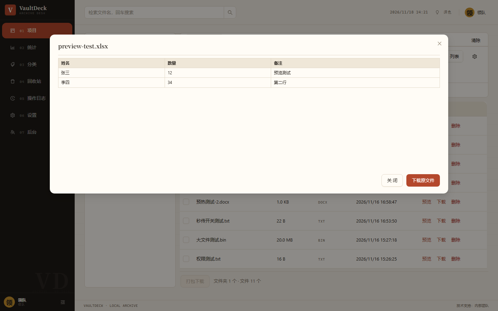
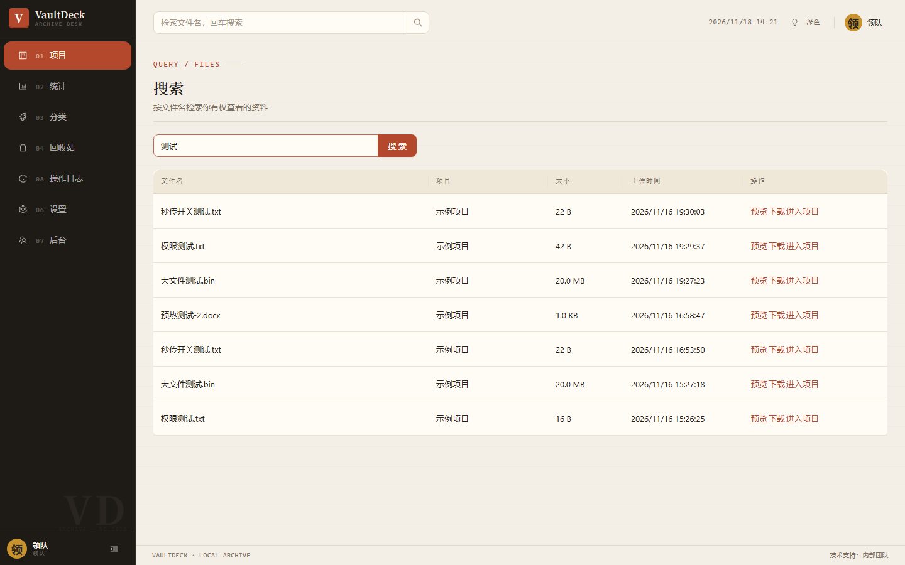
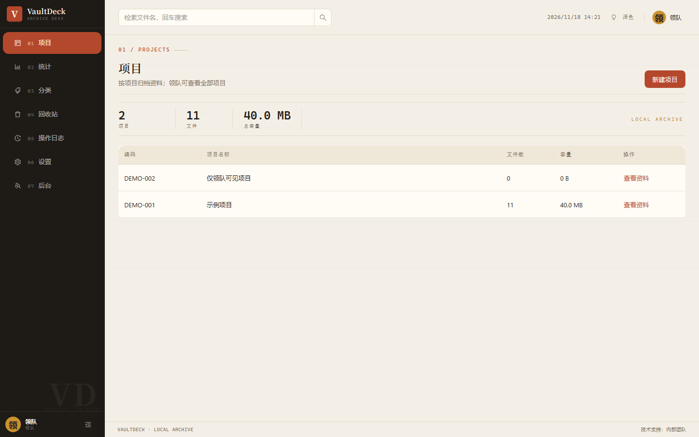
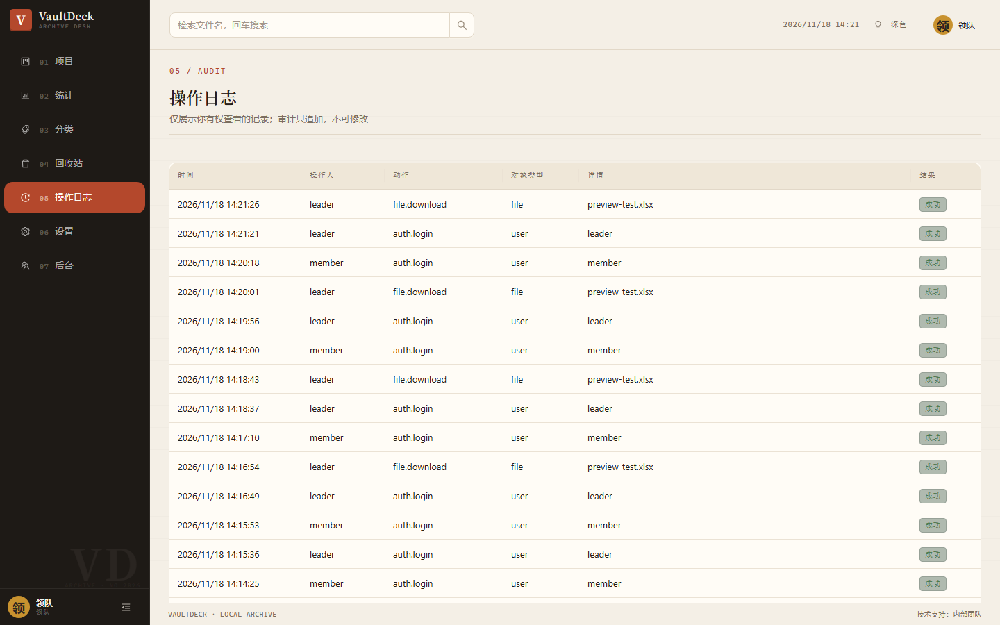
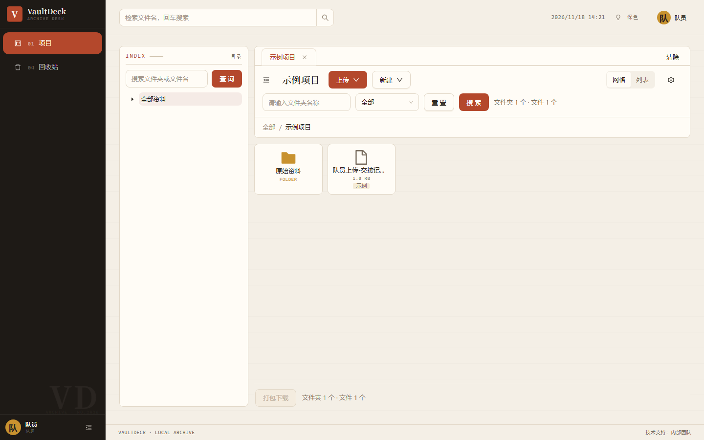

局域网自托管 · MIT 开源
把团队的
每一份资料
收进同一个档案库
VaultDeck 跑在你自己的 Windows 主机上：按项目归档、大文件断点续传、浏览器直接预览，资料不出局域网。

能干什么
一台主机装完，全队浏览器里用。按项目归档、大文件传输、在线预览、权限与台账，都在这一套里。
A归档与查找
- 按项目建库，文件夹树随意分层
- 网格、列表两种视图，按类型筛选
- 文件名搜索，分类归类
B传输与预览
- 8 MB 分片上传，断了接着传
- 相同内容只存一份，秒传不重复占用
- ZIP 打包下载，大文件支持断点下载
- PDF、图片、文本、docx、xlsx 在浏览器里直接看，pptx 可选转换后预览
C权限与台账
- 领队、执行领队、队员三级角色，项目之间互相隔离
- 账号不开放注册，由领队创建与停用，支持 TOTP 双重验证
- 登录、上传、下载、删除全部记入操作日志，只增不改
- 按项目统计文件数与容量，可导出 CSV
它长这样
米白纸面、衬线标题、等宽小字。下面全是真实界面截图，没有修饰。





数据在哪里，不会去哪里
这一节说清楚数据的事，一条条列，不玩概念。
数据在哪里
- 你的主机。文件与数据库都在部署目录里，始终只在你这台机器上。
- 局域网。同事用浏览器访问内网地址，传输走 HTTPS/TLS。
- 加密存放。文件对象用 AES-256-GCM 应用层加密，密钥在你手里。
不会发生什么
- 没有云同步。不存在另一台服务器替你保管副本，也就没有副本外泄这回事。
- 没有统计脚本。系统里没有第三方统计、埋点或遥测组件。
- 没有开放注册。账号只能由领队创建、停用，人走号收。
上传下载都发生在浏览器与你自己的主机之间。完整的加密与边界说明见 README 安全小节。
装一次，全队用
部署是布置机房的人干一次的事；用的人只需要一个浏览器。
部署的人，干一次
- 下载离线包，Releases 页一个 zip
- 解压到任意目录
- 运行管理员 PowerShell 执行安装脚本
约 3 至 8 分钟，不重启电脑，不动部署目录以外的文件。装完是 Windows 服务，开机自启。参数与前置条件见部署手册。
用的人，天天用
浏览器打开内网地址，输入领队发的账号密码，就能传文件、看预览、翻台账。
手机浏览器一样可以用。没有客户端要装，没有插件要配。
实测传输速度
同一套代码在不同硬件上差异较大。以下为参考环境实测值，仅作量级参考，请以目标机器实测为准。
| 磁盘 | 数据量 | 上传 | 下载 | 备份 |
|---|---|---|---|---|
| 内置盘（NVMe SSD） | 20 × 1 GB，10 并发 | 204.5 MB/s | 526.9 MB/s | 266.2 MB/s |
| 外置盘（USB） | 1 GB，单文件 | 23.0 MB/s | 187.3 MB/s | 38.4 MB/s |
| 外置盘（USB） | 10 × 10 GB，10 并发 | 22.8 MB/s | 未测 | 未测 |
| 外置盘（USB） | 20 GB，单文件 | 30.6 MB/s | 未测 | 未测 |
把丑话说在前面
这四条请部署的人读完再决定。
它不是备份系统
删掉并清空回收站、磁盘或整机损坏、加密密钥丢失，这些情况资料都找不回来。VaultDeck 不能当作资料的唯一副本，请另做备份。
密钥丢了就是丢了
文件用 AES-256-GCM 加密，密钥在你手里，也意味着丢了没人能帮你。密钥必须与备份分开、离线保存。
元数据没做应用层加密
数据库里的文件名、大小等结构化信息依赖 BitLocker 与目录权限保护，请给部署目录上锁。
别把它挂到公网
它按局域网设计。暴露公网、弱口令、转交管理员权限带来的风险，由部署者承担。
VaultDeck-v0.1.0-offline.zip
108,107,484 字节（约 103 MB）
SHA-25662eb81cb5ef466917210261316560bbb776ba5b85250d7eda2163ec785f115d3
安装前后都可以用这条哈希核对包没被改过。